생각을 AI가 자동으로 정리해주는 스마트 노트 앱. 메모하면 AI가 요약하고, 태그하고, 연결해줍니다. 복잡한 생각을 단순하게.
카페 운영을 더 스마트하게. 주문 관리부터 고객 분석까지 AI가 도와주는 카페 전용 플랫폼. 사장님의 하루를 가볍게.
2027년 협업 파트너십 확대 예정. 국내를 넘어 글로벌 시장으로 나아가는 We_AIn의 다음 스텝.
OUR JOURNEY
더 나은 내일을 만들기 위해 WeAIn 팀이 걸어온 길